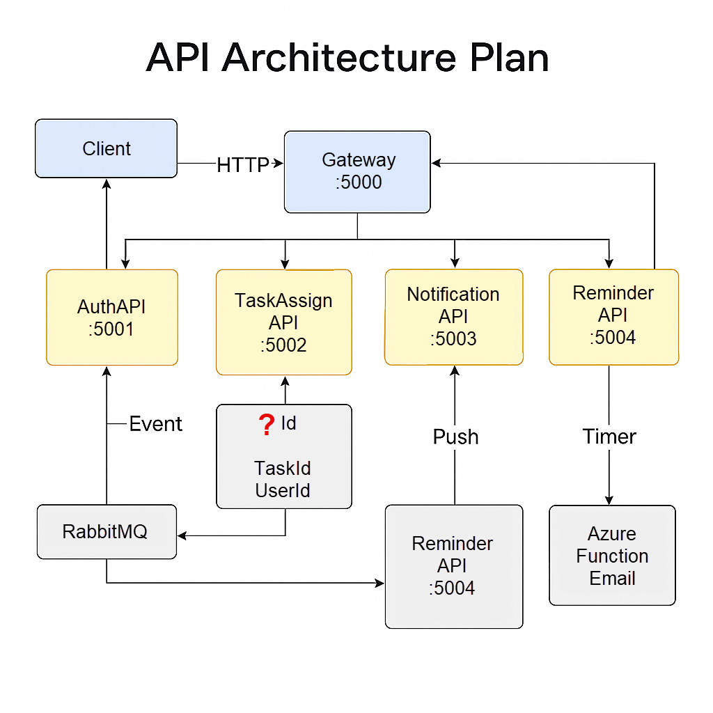
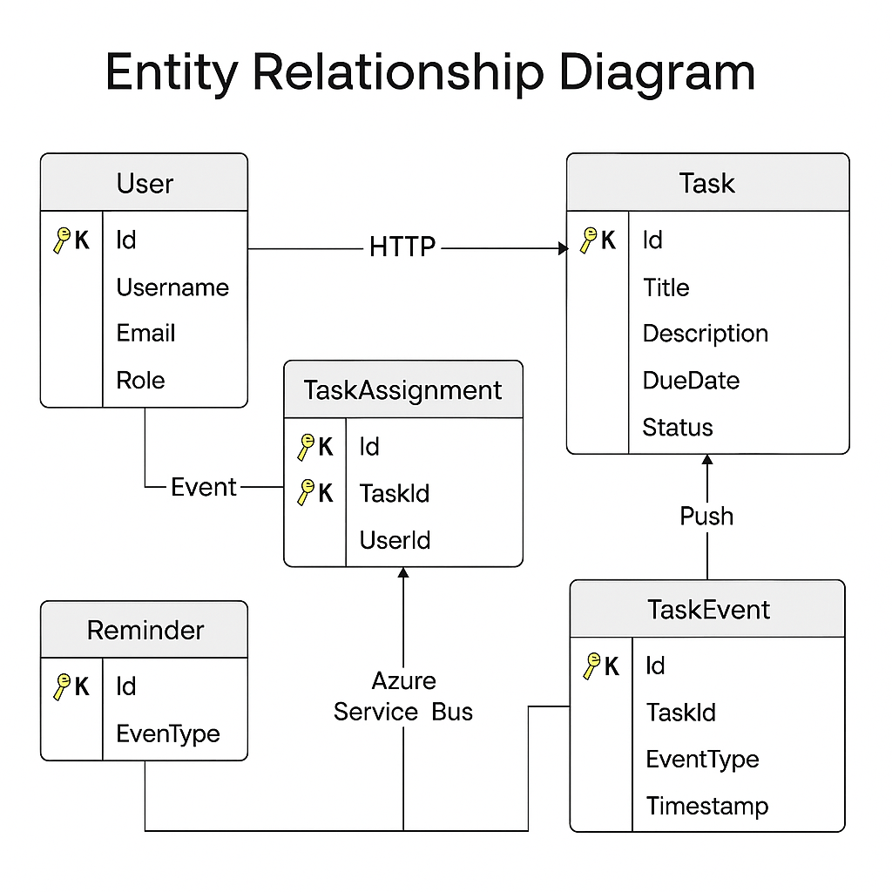

🧠 Smart Task Management System
A full-stack, production-ready Microservices-based solution powered by .NET Core 8, Azure, RabbitMQ, IdentityCore, and ASP.NET Core MVC.
📁 Solution Structure
/SmartTaskSolution
│
├── /Services
│ ├── /AuthService (.NET 8 + IdentityCore)
│ ├── /TaskService (.NET 8 + EF Core)
│ ├── /NotificationSvc (.NET 8 + RabbitMQ + Azure Function)
│ ├── /ReminderService (Azure Function)
│ └── /Gateway (.NET 8 + Ocelot)
│
├── /Frontend (ASP.NET Core MVC + Bootstrap)
├── /Shared (DTOs, Common Utils)
└── /Docs (This checklist)
🌐 Microservices API Chart
| Service Name | Port | Key Endpoints | Description |
|---|---|---|---|
| API Gateway | 5000 | /api/* |
Ocelot routing layer |
| Auth Service | 5001 | /login, /register |
JwtBearer, IdentityCore |
| Task Service | 5002 | /task/create, /assign, /update |
Task operations + RabbitMQ emit |
| Notification Service | 5003 | (RabbitMQ consumer) | Task notification trigger |
| Reminder Service | 5004 | (Azure Bus listener) | Email on task inactivity |
| Frontend MVC | 5005 | /login, /dashboard, /tasks |
UI views with Razor & Bootstrap |
🌐 API Architecture Plan
A high-level overview of how each microservice interacts in the Smart Task Management System.
🔁 Service Interaction Map - Architecture Plan

📌 Each arrow represents the direction and type of communication between services. Ports are labeled for service accessibility through the Gateway.
📌 All services are stateless, decoupled, and accessed via the API Gateway with secure JWT tokens.
🗺️ Microservices (API) Endpoint Map
| Service | Port | Method | Endpoint | Description |
|---|---|---|---|---|
| API Gateway | 5000 | ALL | /api/* |
Aggregator & router |
| Auth Service | 5001 | POST | /login |
Authenticate & issue JWT |
| POST | /register |
Create user with role | ||
| Task Service | 5002 | POST | /task/create |
Create new task |
| POST | /task/assign |
Assign user to task | ||
| PUT | /task/status/update |
Update task status | ||
| GET | /task/{id} |
Get task by ID | ||
| Notification Service | 5003 | EVENT | task.events (RabbitMQ) |
Emits & listens to task changes |
| Reminder Service | 5004 | TIMER/EVENT | — | Checks task inactivity |
| Azure Function Email | — | TRIGGER | emailQueue (Service Bus) |
Sends assignment/reminder email |
| MVC Frontend | 5005 | GET/POST | /login, /dashboard |
UI layer for all services |
🔒 All
/api/*routes are protected via JWT and forwarded through Ocelot Gateway. RabbitMQ and Azure Service Bus operate independently of HTTP flows.
🔐 JWT Flow Summary
- User logs in via
/login(Auth Service) - Auth Service returns JWT token with embedded claims
- Client sends token to Gateway
- Gateway forwards request with token to appropriate service
📬 Messaging Flow
RabbitMQ
- Producer: Task Service
- Exchange:
task.exchange - Queue:
task.events - Consumer: Notification Service
Azure Service Bus
- Trigger: Notification or Reminder Service
- Queue:
emailQueue - Consumer: Azure Function (Email Dispatch)
🧬 Entity Relationship Overview: Normalized & Indexed

✅ Includes primary/foreign keys, normalized entities, and suggested indexes for optimized querying.
✅ Implementation Checklist
📁 Planning
- [ ] Define BRD and scope
- [ ] Design database schemas for each microservice
- [ ] Allocate service ports & API chart
- [ ] Communication breakdown map (RabbitMQ + Azure Bus)
🔌 API Development
Auth Service
- [ ] JwtBearer token via
/login - [ ] User registration
/register - [ ] IdentityCore setup + roles
- [ ] Claims embedded in token
Task Service
- [ ]
/task/create,/assign,/update - [ ] Push event to RabbitMQ
Notification Service
- [ ] RabbitMQ subscription
- [ ] Forward to Azure Service Bus
- [ ] Trigger Azure Function → send email
Reminder Service
- [ ] Track inactivity via timers/calendar
- [ ] Azure Bus → send reminder email
Gateway
- [ ] Ocelot routing + policies
- [ ] JWT validation
🎨 Frontend (MVC App)
- [ ] Login/Register Razor Views
- [ ] Bootstrap 5 theme
- [ ] Task dashboard & creation UI
- [ ] Reminder interval UI
- [ ] DI via
IHttpClientFactory+ JWT header inject
📬 Messaging & Integration
RabbitMQ
- [ ] Exchange:
task.exchange - [ ] Queue:
task.events
Azure
- [ ] Service Bus Queue:
emailQueue - [ ] Functions:
onTaskAssigned,onTaskCompleted,onTaskInactive - [ ] Email: SendGrid or ACS integration
📦 Final Tech Stack by Component
| Component | Stack |
|---|---|
| Auth Service | .NET Core 8, IdentityCore, Azure SQL |
| Task Service | .NET Core 8, EF Core, RabbitMQ, Azure SQL |
| Notification Service | .NET Core 8, Azure Function, RabbitMQ, SendGrid |
| Reminder Service | Azure Function, Azure Service Bus |
| Gateway | ASP.NET Core 8 + Ocelot |
| MVC Frontend | ASP.NET Core MVC, Razor, Bootstrap |
⏭️ Kickoff
- [ ] Start with Step 01: Auth Service Setup